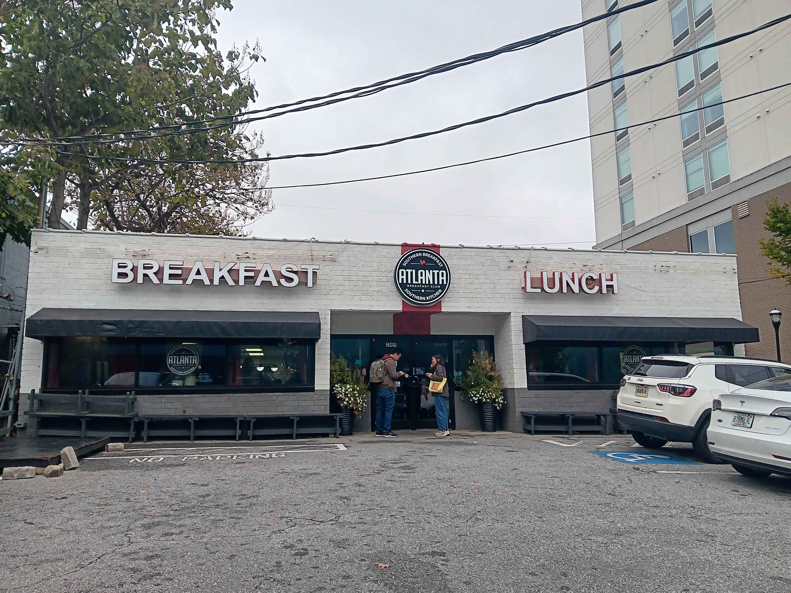
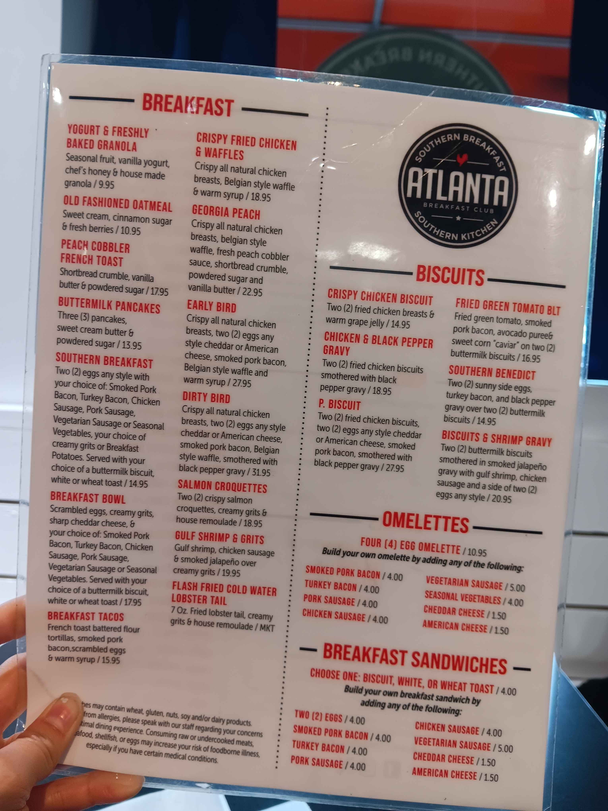

Breakfast in Atlanta: Fish and Food
by Jae_Domain
28 October 2025
I'm happy to report that today marks my first official real time food review, and in a place other than Denver no less! With the INFORMS conference drawing to a close I figured it'd be a good idea to get at least a little sight seeing done. And seeing as I'll be missing tonight's aquarium reception, I figured I'd play hooky for a morning to check it out after breakfast.
I've been trying to stay really mindful about my expenses since food hasn't been included, but I wanted to get at least one real taste of Atlanta before leaving. Besides, there's no way I was going to have any fun looking at fish on an empty stomach. Enter: Atlanta Breakfast Club.
This little joint's tucked away amidst a series of high rise hotels and is just a 7 minute jaunt from the Georgia World Congress Center. It's also right across from the aquarium so it seemed like an easy enough stop. I haven't had the opportunity to try too much food in Georgia, but the fact that it had Atlanta in the name and managed to keep up rent in Centennial Park seemed like a good sign.
And it seems like my instincts were on the money this time, because this place was packed. And most of them weren't even conference goers! This was 11am on a random Tuesday morning in October, and every seat was filled with a little line building up in the lobby. Fortunately, this place seems to run like a well-oiled machine. I'm not really one to talk about service, but the service here was absolutely phenomenal. The waitstaff had incredible synergy, darting back and forth, checking up on customers, giving consistent updates on food and wait times. I was maybe waiting for about 5 minutes before they managed to find me a table. The optimization conference could probably learn a thing or two from them.
The menu options were traditional southern fare and there were a handful of different lightweight options that seemed like a good idea, but if I'm in Atlanta, I figure I might as well indulge. I ordered what I think is probably their signature dish: Georgia Peach, a set of chicken and waffle breakfast sandwiches slathered in peach cobbler and vanilla butter. I can feel my arteries clogging up just thinking about it. The food was out in about 10 to 20 minutes, so I didn't have too much time to think about regretting my life choices.
To my surprise, and great relief, these waffles were actually much smaller and less indulgent than I would've expected. I'm sure they're still like 1000 calories or so, but the flavors weren't overpowering. It's primarily sweet, I would've liked more salt from the chicken, but it's definitely something I was able to keep down pretty easily. Obviously, I'm not well equipped to judge how well ABC fits into the general Georgia cuisine, but I enjoyed my meal, and if I'm ever around in Atlanta again I'd definitely be up for a second visit!
Status ReportFood: Good
Service: Phenomenal
Value: Fair
That's enough breakfast! Let's go see some fish!